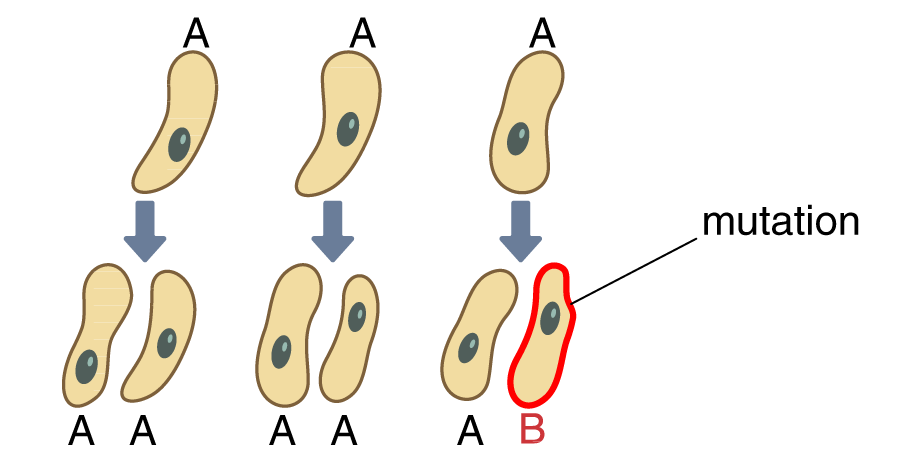
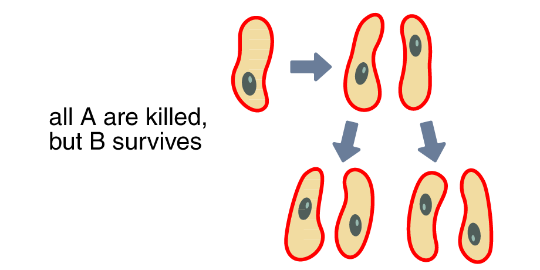
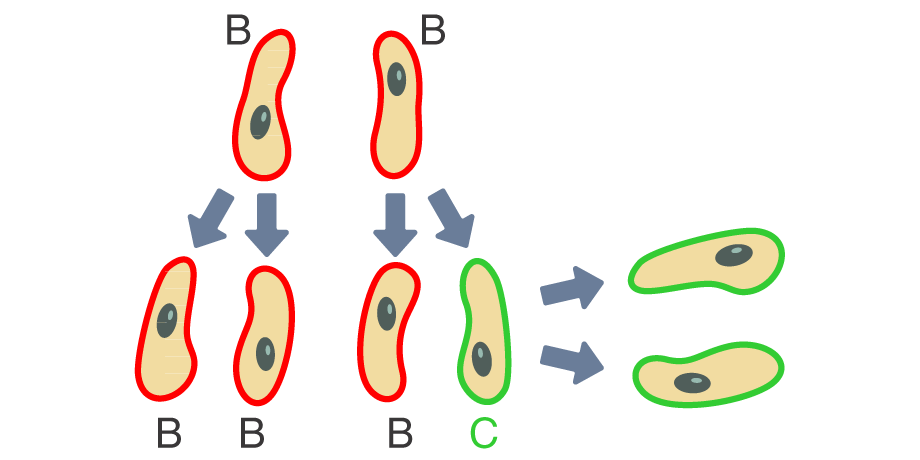
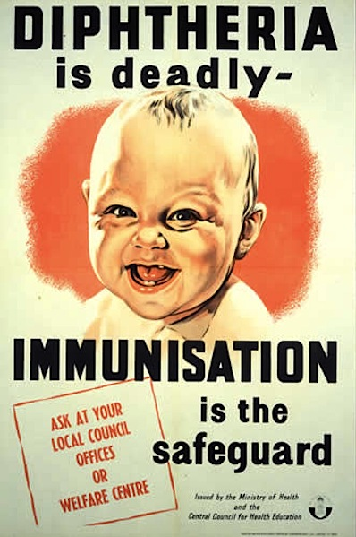

Many medicines only relieve pain, (paracetamol/aspirin); it is your immune system that kills pathogens and cures you.
Disinfectants and antiseptics kill bacteria outside the body (e.g. in toilets and on kitchen surfaces), but are too strong to use inside the body.
Antibiotics (e.g. penicillin, discovered in mould by Alexander Fleming) kill or inhibit the bacteria that cause a number of diseases, but are useless against viral (virus-based) pathogens, which get directly into our cells. (OCR/Edexcel: There are also antifungals that kill fungi.)
Examiner’s tip: “Remember the difference between antibodies (Section 1.3) and antibiotics. Use these terms carefully.”
Specific antibiotics are used to kill specific bacteria. Yet some bacteria become resistant to almost all antibiotics, by chance mutation/variation of their genetic make-up.
Bacteria in our bodies that are making us ill may sometimes mutate at random, in small numbers:

If we are taking antibiotics for our illness and continue to do so, these slightly different bacteria, variant B, may still be killed. If we stop taking antibiotics because we feel better, the bacteria may survive and multiply. If they are on our skin we may spread them to other people, too:

The whole process may repeat again later: bacteria B may by chance mutate again to become strain C. This new strain may then multiply quickly when it meets no or ineffective resistance from antibiotics:

If bacteria become increasingly resistant to antibiotics – when people take antibiotics they don’t really need, or do not finish a full course of antibiotics – ‘superbugs’ like MRSA can develop.
MRSA is highly resistant to antibiotics, is often found in hospitals, and causes hundreds of deaths per year. Doctors washing their hands between treating different patients helps reduce its spread (see Section 1.3 about Doctor Semmelweiss).
Scientists are studying new sources of possible antibiotics, e.g. different moulds, crocodile blood and honey.
Vaccines and immunity
Vaccination (also called immunisation) involves putting a small amount of dead or inactive pathogen into the body, often by injection.
Your white blood cells react in the normal way, producing antibodies that destroy the bacteria’s antigens.
The memory cells left over from this process will respond to the pathogen in the same way if a real infection occurs. This time, antibodies will be produced more quickly. The disease never takes hold: you are immune.
Vaccines work against both bacterial pathogens (e.g. tetanus) and viral pathogens (e.g. measles and mumps).

After the Second World War the government turned its attention to other threats against the nation
Some viruses like the flu mutate so easily that epidemics (in a single country) or pandemics (international) result, e.g. swine flu in 2009.
In the 1970s the whooping cough vaccine was wrongly linked by a small study to brain damage in children. The original scary story carried more weight in the media than later evidence that the study was flawed. Vaccination took many years to return to its previous levels: more children died than should have.
No vaccine can be guaranteed 100% safe. There is often a tiny risk of side effects with some vaccines, affecting a very small number of people. This can make parental choice about whether to vaccinate difficult.
Overall, vaccines against (for example) smallpox have saved millions of lives in recent decades. To be effective, ideally everyone in a population should be vaccinated.
Investigating bacteria (AQA)
We culture (grow) microorganisms, especially bacteria, to investigate how they are affected by antibiotics.
Agar jelly is a culture medium that provides nutrients (carbohydrates and minerals) for the microorganisms.
Cultures must be prepared carefully: they must be uncontaminated from other microbes in air, water, our skin. They also need oxygen and warmth
Bacteria can be grown in agar jelly and different results compared, but it must be completely uncontaminated from our skin for comparisons to be valid
We sterilize the agar itself, the petri dishes and the loops used to transfer the bacteria to the agar; autoclave ovens (high pressure steam), gamma rays and UV light can also be used.
We keep cultures at a temperature lower than the human body’s (37°C) to reduce the risk of them entering our bodies. We can still investigate bacteria at lower temperatures.